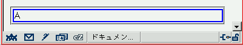
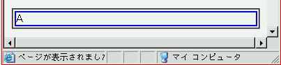

ブラウザの閲覧領域からはみ出している要素がないにもかかわらず、スクロールバーが表示される場合がある。
閲覧領域をはみ出ないように調整しています。
Moz1.0（標準モード）
WinIE6.0（標準モード）
スレッドでは「position指定した要素」で発生するとありますが、position指定をしない状態でもこのバグは発生するようです。
WinIE6.0では、閲覧領域の幅に近い幅を持つ要素があるときに横スクロールバーが表示される場合があります。